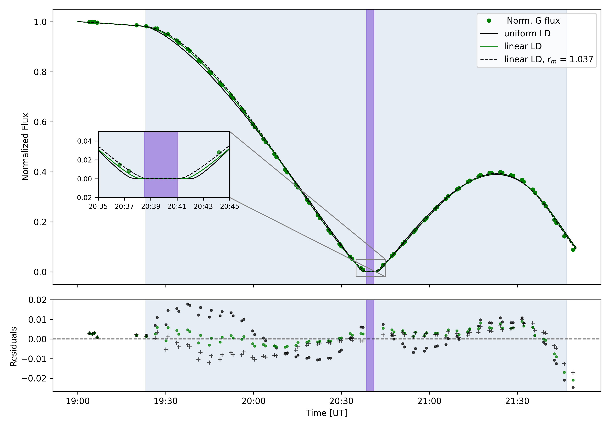
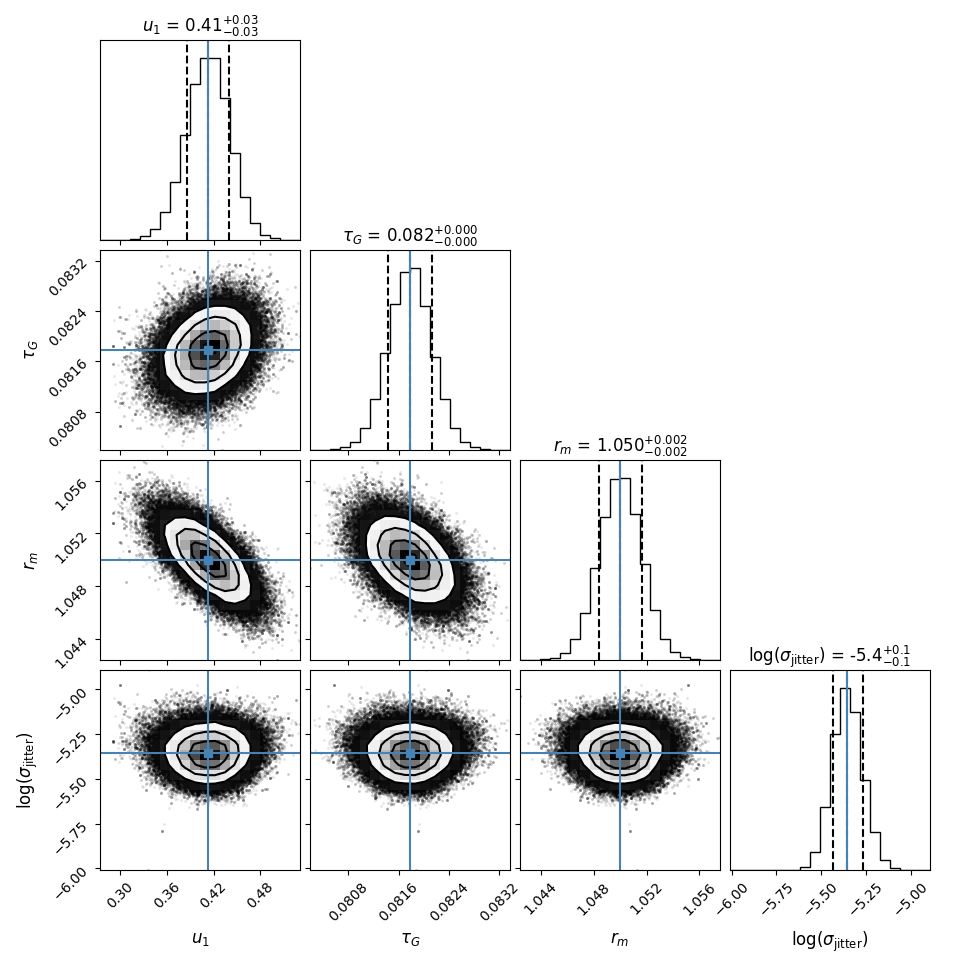

Examples and Tutorials¶
This section provides detailed examples and tutorials demonstrating the full workflow of the Solar Eclipse Model, particularly focusing on the MCMC fitting pipeline and its configuration.
Full MCMC Analysis Workflow with model_eclipse_mcmc.py¶
The primary script for performing MCMC (Markov Chain Monte Carlo) analysis on solar eclipse light curves is model_eclipse_mcmc.py, located in the root directory of the repository. This script reads configuration from a YAML file, executes the MCMC sampling, and generates various output files including fit summaries and plots.
Running the Script:
Execute model_eclipse_mcmc.py from the root directory of the repository. It accepts command-line arguments to specify the configuration file and which model(s) to run.
# To run a specific model (e.g., the 'linear' limb darkening model)
python model_eclipse_mcmc.py --config config/config.yaml --model linear
# To run all models defined in the config.yaml
python model_eclipse_mcmc.py --config config/config.yaml --model all
Configuration (`config.yaml`):
The config.yaml file is central to controlling the behavior of the model_eclipse_mcmc.py script. It defines data paths, MCMC fitting parameters, and plotting configurations. This file is located in the config/ directory.
It is divided into two main sections: common and models.
`common`: Global settings that apply across all model runs.
output_dir (string): Directory where all results (MCMC chains, plots, fit summaries) will be saved.
data_file (string): File containing observational measurements. This file is expected to be space-delimited with comments starting with #.
date_column (string): The header name of the column in data_file that contains the date component of the observations.
time_column (string): The header name of the column in data_file that contains the time component of the observations.
flux_column (string): The header name of the column in data_file that contains the (normalized) flux to be modeled.
color_channel (string): A single character (e.g., ‘G’ for green) used in filenames and plot labels to denote the color channel of the observations.
sigma_data (float): The estimated accuracy (standard deviation) of the measured flux data.
- plot_config (dictionary): Configuration settings specifically for generating plots.
plot_color (string): Matplotlib color string for the main data plot (e.g., ‘green’, ‘k’).
plot_marker_symbol (string): Matplotlib marker symbol for the main data plot (e.g., ‘.’, ‘o’).
plot_range (dictionary): Dictionary of the plotting time range (start_datetime, end_datetime) in “YYYY-MM-DD HH:MM:SS” format.
eclipse_times (dictionary): Dictionary of eclipse contact times (tc1, tc2, tc3, tc4) in “YYYY-MM-DD HH:MM:SS” format. These are used for plotting shaded regions on the light curve. tc2 and tc3 can be removed or commented out for partial eclipses.
- inset (dictionary): Configuration for an inset plot within the main light curve plot.
enabled (boolean): true to enable the inset, false to disable.
loc (string): Location of the inset (‘lower left’, ‘upper right’, etc.).
width (string): Width of the inset (e.g., “80%”).
height (string): Height of the inset (e.g., “80%”).
bbox_to_anchor (list of floats): Bounding box for the inset axes (x, y, width, height) in normalized coordinates.
bbox_transform (string): Transformation for bbox_to_anchor (‘axes’, ‘figure’, ‘data’).
x_lim (list of strings): X-axis limits for the inset plot (e.g., [“2019-07-02 20:35:00”, “2019-07-02 20:45:00”]).
y_lim (list of floats): Y-axis limits for the inset plot (e.g., [-0.02, 0.05]).
mark_inset_loc (list of ints): Corners to use for connecting the inset axes and the area in the parent axes (e.g., [1, 3]).
`models`: Definitions for different eclipse models, each with its own specific parameters and fitting configuration. Each key under models (e.g., linear, quadratic, uniform) represents a distinct model variant.
For each model (e.g., linear, quadratic, uniform):
limb_dark (string): The limb darkening law to use (‘linear’, ‘quadratic’, ‘uniform’).
moon_radius (float): The radius of the Moon in units of the Sun’s radius.
atm_ext (float): The atmospheric extinction coefficient.
u (list of floats): Limb darkening coefficients. The number of elements depends on the limb_dark law (e.g., [u1] for linear, [u1, u2] for quadratic, [] for uniform).
lat (float): Latitude of the observer in degrees.
lon (float): Longitude of the observer in degrees.
- fit_params (dictionary): Parameters to be fitted by the MCMC sampler, along with their priors and plotting labels. Each entry in fit_params is a parameter name (e.g., u1, u2, atm_ext, moon_radius, log_sigma_jitter).
prior (list of floats): The lower and upper bounds for the uniform prior distribution of the parameter. For log_sigma_jitter, these values will be converted to log scale internally.
plot_label (string): The LaTeX-formatted label to use for this parameter in plots (e.g., corner plots). Use {{color_channel}} as a placeholder for the color_channel defined in the common section.
- plotting (dictionary): Model-specific plotting configurations for the plot_data_and_model function.
color (string): Matplotlib color string for this model’s light curve line (e.g., ‘k’, ‘green’).
line_style (string): Matplotlib line style for this model’s light curve line (e.g., ‘-’, ‘–‘).
residuals_marker (string): Matplotlib marker symbol for this model’s residuals (e.g., ‘.’, ‘+’).
model_label (string): Label for this model to appear in the plot legend.
Output and Results:
When model_eclipse_mcmc.py is executed, it generates various output files in the directory specified by output_dir in your config.yaml (defaulting to ./results/).
These outputs typically include:
MCMC Fit Summary CSVs: Files like mcmc_fit_results_linear_G_YYYYMMDD.csv providing statistical summaries (median, 1-sigma credible intervals) for the fitted parameters.
Corner Plots: PNG images (e.g., corner_plot_linear_G_YYYYMMDD.png) visualizing the marginalized posterior distributions of the fitted parameters.
Data-Model Comparison Plots: PNG images (e.g., model_fit_G_YYYYMMDD.png) showing the observed data, the best-fit model light curve, and the residuals.
Sampler State (Optional): Pickled sampler objects (sampler_MODELNAME.pkl) if save_data is enabled in run_sampler.
To illustrate, here is an example plot generated by a typical run of the uniform LD, linear LD and linear LD with the moon to sun ratio fixed models on observations of the total solar eclipse of 2019 in Chile. This plot shows the normalized observed flux alongside the best-fit model light curve, including residuals in the lower panel. The shaded regions indicate the partial and total eclipse phases. Notice how the model accurately captures the light curve morphology during the eclipse. At first sight the light curve looks strange, with an ascending branch that does not reach the full brightness again. This is caused by the atmospheric extinction. The sun was only 1* above the horizon at 4th contact and hence appeared much fainter than at first contact which occured at an altitude of 25°.
{kind=link}
The next plot is a corner plot for fitted parameters (e.g., limb darkening coefficient, atmospheric extinction, and moon radius) for the linear LD model. The histograms on the diagonals show the 1D posteriors, and the scatter plots show the 2D correlations between parameters. The vertical lines indicate the median and 1-sigma credible intervals which still underestimate the true errors.
{kind=link}
Script Internal Details¶
This section provides API-level documentation for the functions within the model_eclipse_mcmc.py script. While this script primarily serves as an example workflow, its functions can be individually inspected.
model_eclipse_mcmc.py
Main script to run MCMC fitting for solar eclipse light curve models. Supports YAML configuration, CLI arguments, and multi-model comparisons.
- model_eclipse_mcmc.load_config(config_file)[source]¶
Load configuration YAML file.
- Parameters:
config_file (str) – Path to the YAML configuration file (e.g., ‘config.yaml’).
- Returns:
A dictionary containing the loaded configuration.
- Return type:
dict
- model_eclipse_mcmc.create_params(model_config, obs_datetime)[source]¶
Construct a SolarEclipsParams object from a model configuration dictionary.
This function initializes a SolarEclipsParams object and populates its attributes based on the provided model configuration and observed timestamps.
- Parameters:
model_config (dict) – A dictionary containing the configuration for a single model, typically from the ‘models’ section of the config.yaml file.
obs_datetime (array-like) – Observation timestamps, expected to be in a format convertible to datetime64 (e.g., numpy array of datetimes or pandas Timestamp series). These times are used to set the obs_datetime attribute of the SolarEclipsParams object for fixed-time light curve generation.
- Returns:
An initialized SolarEclipsParams object with attributes set according to the model configuration.
- Return type:
SolarEclipsParams
- model_eclipse_mcmc.make_setter(label)[source]¶
Creates a setter function for updating SolarEclipsParams attributes.
This function dynamically creates a callable that sets a specific parameter on a SolarEclipsParams object. It handles special cases for limb darkening coefficients (u1, u2, etc.) and ‘log_’ prefixed parameters.
- Parameters:
label (str) – The name of the parameter for which to create a setter (e.g., ‘u1’, ‘atm_ext’, ‘log_sigma_jitter’).
- Returns:
A lambda function
(params, val) -> Nonethat sets the specified parametervalon theparamsobject. Returns a no-op function for ‘log_’ prefixed labels as they are handled differently during MCMC.- Return type:
callable
- model_eclipse_mcmc.build_fit_config(model_config)[source]¶
Builds the MCMC fitting configuration dictionary from a model’s definition.
This function processes the
fit_paramssection of a model’s configuration to create a structured dictionary used by the MCMC sampler. It includes priors, a setter function for each parameter, and a plotting label.- Parameters:
model_config (dict) – A dictionary representing a single model’s configuration, typically from the ‘models’ section of the
config.yamlfile. It must contain a ‘fit_params’ key.- Returns:
A dictionary where keys are parameter labels (e.g., ‘u1’, ‘atm_ext’) and values are dictionaries containing:
’prior’ (tuple): A tuple (lower_bound, upper_bound) for the uniform prior. For ‘log_’ prefixed parameters, these bounds are already in log space.
’setter’ (callable): A function that sets the parameter on a SolarEclipsParams object.
’plot_label’ (str): The LaTeX-formatted label for plotting this parameter.
- Return type:
dict
- model_eclipse_mcmc.main()[source]¶
Main entry point for the solar eclipse MCMC fitting tool.
This function handles command-line argument parsing, loads the configuration from a YAML file, loads observational data, runs the MCMC sampler for the specified models, summarizes the fitting results, and generates output plots.